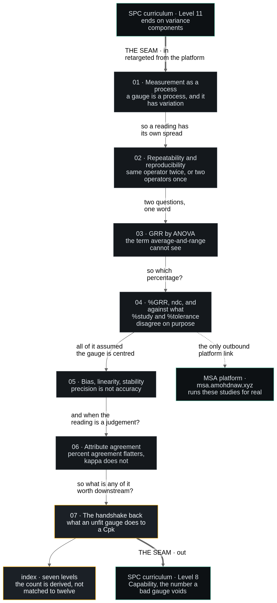

§ 1The arc, and the seam
Seven levels, one per movement of the parent contract's §2. Each ends by raising the question the next answers — that chain is the structure and there is no other. The two heavy arrows are the seam: exactly one link each way, and the inbound half does not exist yet.

msa-arc.mmd; the
.excalidraw opens at excalidraw.com if a box needs moving.§ 2Six lanes, one level
A level is not written once; it passes through six owners. The rule that makes it work is that the library computes every number and everything downstream only reads — so a figure, a video frame, a page and a test can never disagree.
One module per level in src/msalab/. Every claim the level makes is a function here, returning a number.
Studies generated from a seeded model so any reader can reproduce a figure exactly.
One test per sentence the level asserts. Published AIAG values are checked against the library, never quoted.
Break the library deliberately, watch each gate fail, restore.
Two static sheets per level, rendered on the exact ground colour so they sit on the page seamlessly.
Open every rendered PNG and look. Labels collide, legends land on data, y-labels clip the frame.
NarratedScene / NarratedCameraScene: the narration script is the pacing, so silent and voiced cuts need no separate tuning.
Numbers arrive as the result of a movement, not typed. Every play carries a deliberate rate_func.
A chapter spec of sections, prose, notes and figures; the generator emits the HTML. Numbers interpolated from the library at build time.
JS recomputes the same formulas in the browser, and a browser test proves it agrees with Python to the printed precision.
typeset.mjs renders maths with KaTeX; --check proves the pass is idempotent.
<annotation> holds the source even when the visible layer is broken, so "did it emit anything" is a vacuous gate. Ask what the rendered text says.Seven widths, 320–2560: overflow, symmetric margins, one left edge, no Greek under uppercase, no LaTeX as text, canvas sized to column.
Follow every next link on the live site, hop by hop.
Push, then request a build directly — a wedged Actions run can sit queued for 40 minutes and cancel refuses it.
§ 3The one design delta, rendered
The site inherits the SPC design system whole. The single addition is that a readout tile carries its own state: border and header wash, not just coloured digits. And there is deliberately no third hue for the conditional band — AIAG's 10–30 % means "no verdict yet", which ink says better than amber would.
FOUR TILES, THREE STATES. AMBER APPEARS NOWHERE — IT IS WAYFINDING ONLY.
§ 4Where things live
| Artifact | Path | Inherited from | Why it is there |
|---|---|---|---|
| contract | specs/msa-curriculum-contract.md | new | The approval artifact. Checks are re-read from it, never from memory. |
| design authority | DESIGN.md | portfolio/DESIGN.md | Inheritance header plus two amendments. One authority, a short diff, never a fork. |
| the maths | src/msalab/ | new | Shares method with spclab, not code — the two sites must move independently. |
| page generator | tools/chapterise.py | portfolio (1836 lines) | Chapter spec to built HTML, with the note/figure/lab grammar already solved. |
| maths pass | tools/typeset.mjs | portfolio | KaTeX plus the --check idempotence gate. |
| narration base | src/msalab/narration.py | spclab/narration.py | Narration drives pacing, so one script gives a silent and a voiced cut. |
| media build | build-media.sh | spc-lab | Render, caption, score a poster frame, in one command. |
| fonts | fonts/*.woff2 | portfolio | Self-hosted, so Manim renders the same outlines the browser gets. |
| this diagram | diagrams/msa-arc.{mmd,svg,png,excalidraw} | new | .mmd is the source of truth; the scene is editable at excalidraw.com. |
§ 5What is deliberately absent
| Not here | Because |
|---|---|
| control limits, Cpk, Shewhart | The boundary rule. This site never teaches them; one Level 7 sentence hands them back. |
| a second MSA link | §2 allows exactly one each way. Level 4 spends the platform link; Level 7 spends the SPC one. |
| real company studies | No .xls, no tool IDs, no PIC names, anonymised or otherwise. Simulated throughout. |
| twelve levels | The count is derived from the subject. Seven, and the index says seven. |
| sampling plans, AQL, Weibull, GUM | Each is plausibly MSA-adjacent and each is a different subject. |
| a third verdict colour | Conditional is neutral. Nothing on the site is a traffic light. |